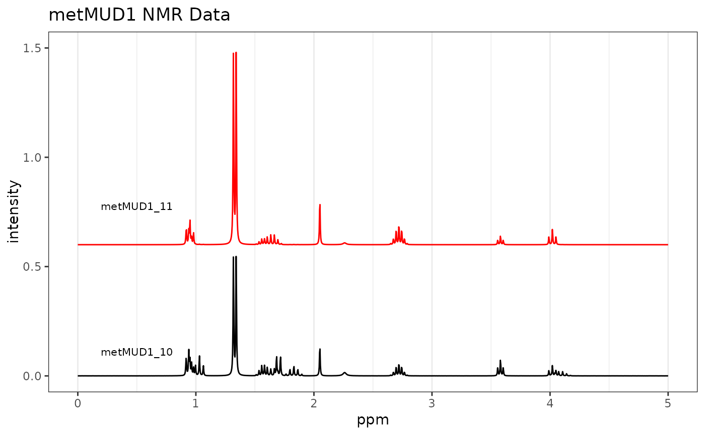
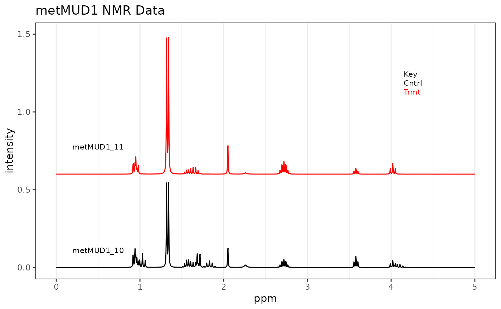

Plots the spectra stored in a Spectra object. Spectra may be plotted
offset or stacked. The vertical scale is controlled by a combination of
several parameters.
An object of S3 class Spectra.
An integer vector specifying which spectra to plot, and the order.
A vector giving the limits of the y axis desired, for instance
c(0, 15). This parameter depends upon the range of values in the
stored spectra and defaults to the height of the largest peak in the data
set. Interacts with the next two arguments, as well as the number of
spectra to be plotted as given in which. Trial and error is used to
adjust all these arguments to produce the desired plot.
A number specifying the vertical offset between spectra if more than one is plotted. Set to 0.0 to overlay the spectra.
A number specifying an amplification factor to be applied to all spectra. Useful for magnifying spectra so small features show up (though large peaks will then be clipped, unless you zoom on the x axis).
A number (in frequency units) giving the location of a label for each spectrum.
Generally, pick an area that is clear in all spectra plotted. If no label
is desired, set lab.pos = "none".
Logical. Places light gray vertical lines at each tick mark
if TRUE.
Either a list with elements x and y, or a string like
"topright". Values in a list should be on [0,1], i.e. the lower left of the plot
area is 0,0 and the upper right is 1,1. String values are those described in
legend under "Details". A value of "none" is acceptable as well.
Parameters to be passed to the plotting routines. Applies to base graphics only.
The returned value depends on the graphics option selected (see GraphicsOptions).
None. Side effect is a plot.
The plot is displayed, and a ggplot2 plot object is returned if the
value is assigned. The plot can be modified in the usual ggplot2 manner.
plotSpectraJS for the interactive version. See GraphicsOptions
for more information about the graphics options. Additional documentation at
https://bryanhanson.github.io/ChemoSpec/
# This example assumes the graphics output is set to ggplot2 (see ?GraphicsOptions).
library("ggplot2")
data(metMUD1)
p1 <- plotSpectra(metMUD1, which = c(10, 11), yrange = c(0, 1.5),
offset = 0.06, amplify = 10, lab.pos = 0.5)
p1 <- p1 + ggtitle("metMUD1 NMR Data")
p1

# Add a legend at x, y coords
p2 <- plotSpectra(metMUD1, which = c(10, 11), yrange = c(0, 1.5),
offset = 0.06, amplify = 10, lab.pos = 0.5, leg.loc = list(x = 0.8, y = 0.8))
p2 <- p2 + ggtitle("metMUD1 NMR Data")
p2
